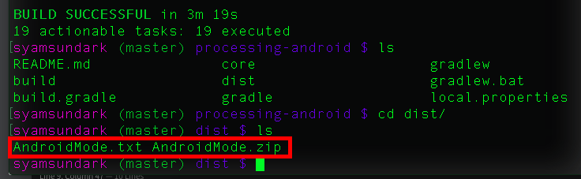
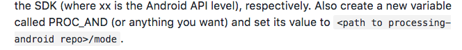
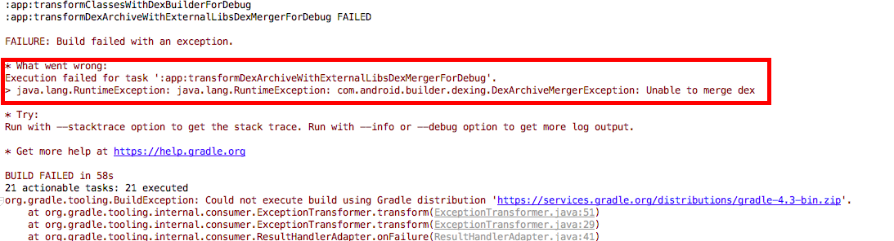
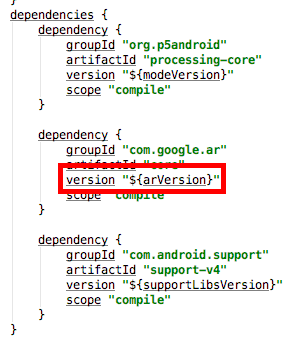
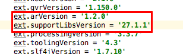
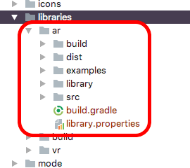
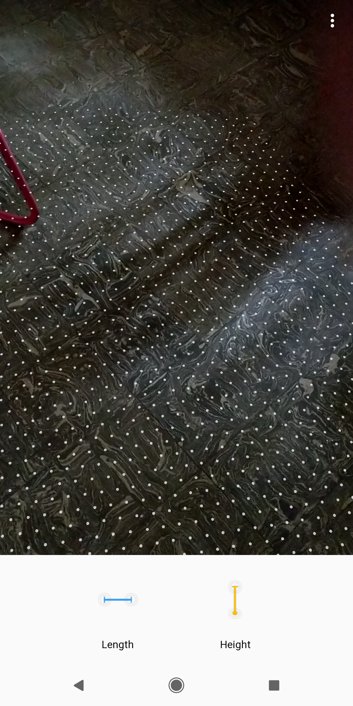
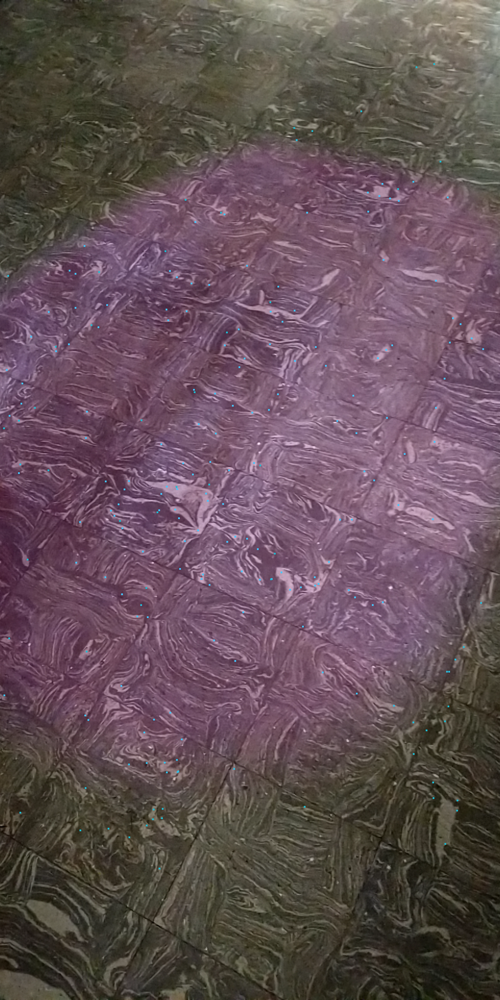
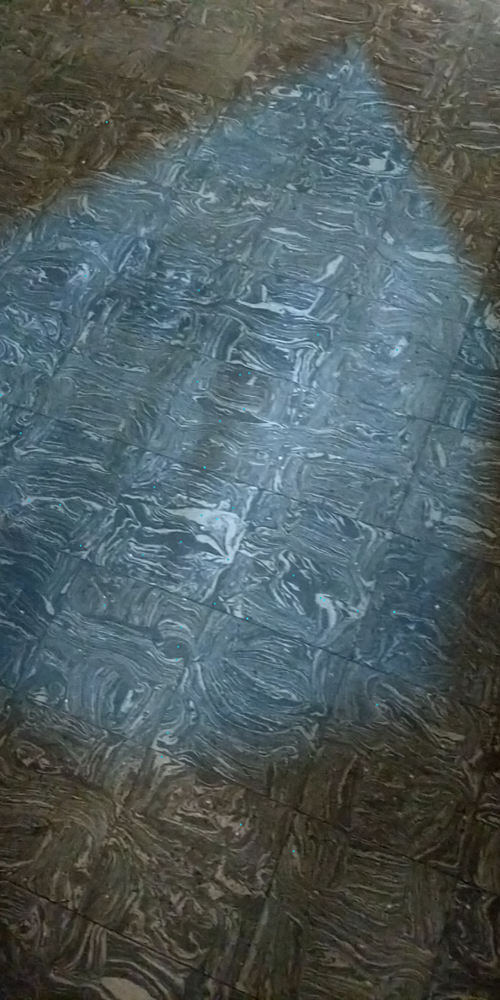
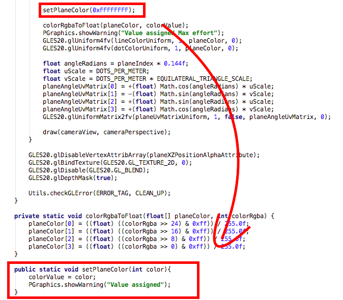

Contributions Week-IV
Hello World.!
This is my weekly report 4 on the AR Library for Processing-Android which is a Library that will help creating Augmented Reality applications using Processing through Android Mode.
After the successful completion of first evaluation, I resumed my work with the AR Library concentration on the implementation of the next sub-renderer that happens to be tied up with the main AR Renderer .i.e., Plane Renderer. But after when I was few steps into the implementation of the sub-renderer the Processing for Android build system was migrated from ant build system to Gradle build - which is a good in my openion. Since I was half way through the plane renderer, I though let me complete the Plane renderer with the ant build system once it has reached a semi-consistent state I can switch to the new build system and so did I.

Building with gradle was easy and by following the WIKI the build was made successful in no time except there where some paths that had to be remapped and since IntelliJ representational schema is different from that of the Eclipse the path for PROC_AND should have been processing_android_dir/mode . Later I suggested this change in the WIKI and it was updated.

Now the migration of the AR template files and AR option in Android mode menu was set and the appropriate build scripts were updated to work in accordance with the AR Library plus the arcore dependencies that has to be imported were specified so that those dependencies can be pulled in real time unlink with the ant build system.

Now, with the new build system being set-up, I tied to import the AR Library right way as a library but unfortunately, I had a build exceptions popping up quite often in the early builds and the most prominent one was from the following Merge error.

Later, I found that this error was caused due to invalid version of the arcore which was specified and once it was fixed there where no conflicts and the new build system builds and deploys the library as expected.
  
Plane Renderer:
The most important of all sub-renderers in AR is the Plane Renderer since it handles most of the complexities of handling the object by keeping the objects in the desired positions for a long time. It gives the sense of realism to the scene and helps to show as if the object shown is a real world object even though it happens to be a virtual one. The work of the renderer is nothing but to find out the desired plane over which the virtual objects can be places. Simple right, but actually it's a bit complicated than it seems because if a proper plane is not found then the anchors can't be formed and if the anchors are not found placing the object in the scene is not feasible. So, I hope now you get a clear picture of how nested the functioning of the sub-renderers are.
Now, the following image (1) - is the official Measure app by Google in the play store that is of-course used to measure the dimensions of an object - note how the plane renderer is implemented. Now, the image (2) and image (3) - is the plane renderer implemented though PDE using the AR Library.
  
I'm planning on allowing users to add colors or textures to the detected plane but passing the RGBA color value through the calls inside the library gives the appropriate result but passing the value through sketch doesn't seem to work. I should try to fix this first with the color and once it's done I'll start with the textures.

Once the plane renderer is implemented and has the desired functionalities I'll move alone with the implementation of the point cloud renderer.